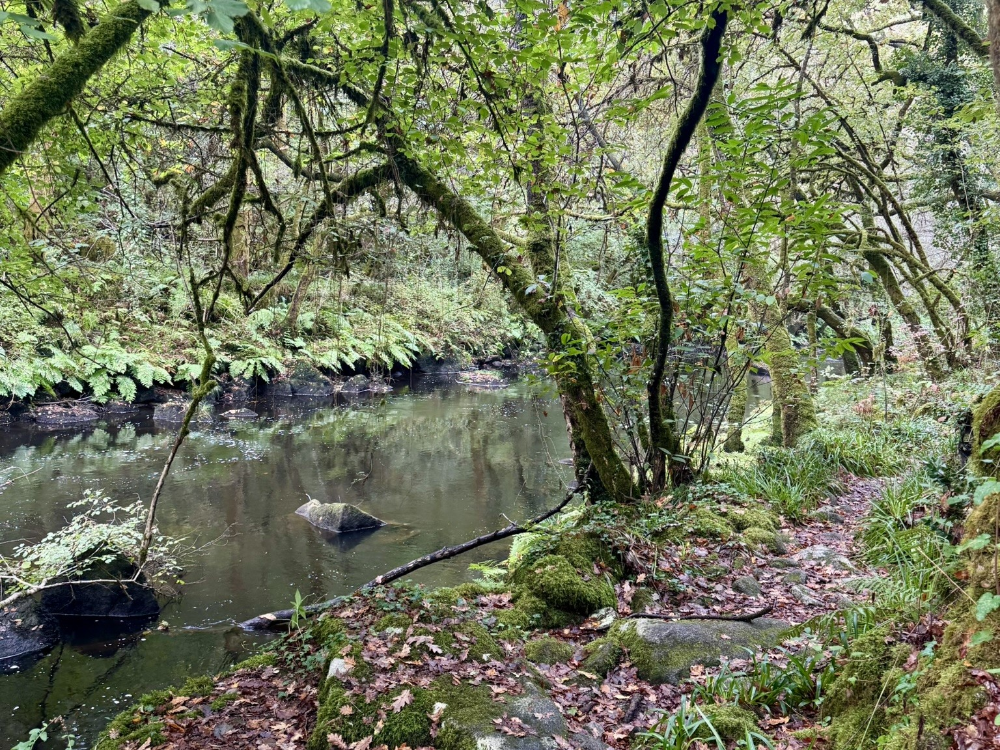

El próximo 21 de febrero de 2026, el entorno natural de Muiños do Batán, en Carral, será el escenario de una actividad de senderismo pensada para disfrutar del paisaje, el patrimonio y la biodiversidad del espacio que rodea el río Barcés.
En colaboración con Universidade da Coruña se llevará a cabo una ruta circular de 8 kilómetros, con inicio a las 10:00 y finalización prevista a las 14:00. El punto de encuentro y salida estará situado en el merendero de Muiños do Batán, en Carral, desde donde comenzará un recorrido que se adentrará en el valle del río Barcés, entre Carral y Mesón do Vento.
El recorrido discurrirá a lo largo del río Abelleira, pasando por un conjunto de molinos tradicionales, un batán y una antigua fábrica hidroeléctrica, así como por cascadas y saltos de agua que enriquecen notablemente el paisaje. En las zonas más sombrías, el bosque se encuentra en muy buen estado de conservación, con abundancia de helechos y musgos, además de avellanos y laureles, creando un entorno especialmente atractivo.
A lo largo de la ruta se alcanzarán varios miradores naturales sobre el valle, que permitirán disfrutar de amplias vistas del entorno. El itinerario atraviesa también pequeñas aldeas tradicionales, donde se conservan elementos etnográficos como lavaderos, pazos y hórreos, que aportan un importante valor cultural al recorrido.
La combinación de espacios fluviales, zonas de bosque bien conservado y áreas más abiertas hace que el recorrido resulte variado y equilibrado, alternando tramos de sombra con otros más despejados que permiten apreciar el paisaje del valle.
Con esta propuesta se pretende poner en valor tanto el patrimonio natural como el etnográfico del entorno del río Abelleira, ofreciendo una experiencia que combina paisaje, historia y tradición en un itinerario de gran interés ambiental y cultural.